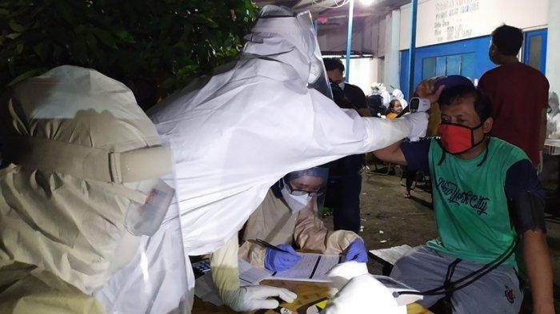

PKM Jilid 4 di Semarang, Tempat Hiburan dan Wisata Boleh Kembali Beroperasi

Wali Kota Semarang, Hendrar Prihadi, menanggapi terkait warning atau peringatan dari Gubernur Jawa Tengah, Ganjar Pranowo bahwa Kota Semarang masih masuk dalam zona merah. "Kami terima kasih atas warning dari Pak Gubernur untuk bisa kami tindaklanjuti di lapangan," ucap Hendi, sapaan akrabnya, Rabu (17/6). Hendi pun mempertanyakan apakah benar hanya tiga daerah yang masih menjadi zona merah di Jawa Tengah. Jika data tersebut dari provinsi seharusnya punya data akurat 35 kabupaten/kota. "Hari Jumat saya sempat telepon dengan dua kepala daerah. Mereka masih menyampaikan kegalauannya karena dengan tes massal di tempat publik jumlah penderita bertambah. Dua daerah yang diskusi dengan saya ternyata tidak masuk zona merah yang disebutkan Pak Gubernur," katanya. Meski demikian, bagi Hendi, peringatan bahwa Kota Semarang masih masuk zona merah merupakan sebuah bentuk perhatian dari Gubernur agar Kota Semarang bisa berbenah lebih baik. Menurutnya, perlu upaya menghimpun data yang lebih jelas dan akurat. Kasus Covid-19 ini bukan seperti pertandingan berlomba-lomba secara cepat menuju zona hijau.
"Kalau hanya pertandingan tapi pergerakannya tidak sama pasti dimenangkan oleh wilayah yang tidak melakukan tes massal di tempat keramaian. Buat saya ini bukan pertandingan. Ini upaya Pemkot Semarang untuk bisa segera menyelesaikan persoalan Covid-19 di Kota ini," paparnya. Hingga kini, lanjut Hendi, Pemerintah Kota Semarang tidak ragu melakukan tes massal di tempat keramaian agar segera ditemukan warga yang positif dan bisa langsung melakukan penelusuaran atau tracing. "Begitu ketahuan kami karantina. Kalau sudah sembuh bisa kembali ke rumah dengan aman. Tapi, kalau tidak dilakukan seperti itu mereka bercengkrama dengan keluarga, akhirnya keluarganya positif. Pindah ke tetangga positif. Pasti tidak selesai-selesai," ujarnya. Jika hal itu terus dilakukan, dia optimis penanganan akan segera selesai dan Kota Semarang bisa kembali ke zona hijau. "Zona hijau mestinya alami. Benar-benar warganya sehat. Bukan zona hijau karena tidak ada pergerakan di lapangan. Itu yang saya khawatirkan. Prinsipnya tidak ada pemimpin yang memginginkan warganya menjadi tidak baik dan sehat. Pasti menginginkan sejahtera, sehat, dan sukses," tandasnya.
Di sisi lain, Hendi menyampaikan bahwa ruang karantina bagi pasien positif Covid-19 di rumah dinas Wali Kota Semarang saat ini penuh. Untuk itu, pasien saat ini diarahkan untuk karantina di Balai Diklat Kota Semarang. "Update hari ini di rumah dinas ada dua ruangan, yang di aula sudah penuh, 95 kamar. Sebagian hari ini kami geser ke Diklat. Ada 28 orang yang di sana karena positif Covid-19," kata Hendi, sapaan akrabnya, Rabu (17/6). Meski ruang karantina rumah dinas wali kota saat ini penuh, Hendi memastikan, rumah sakit di Kota Semarang masih mampu menampung pasien positif Covid-19. Kapasitas rumah sakit di Kota Semarang rata-rata masih 50 hingga 60 persen. "Masih ada kemampuan. Di RS masih rata-rata 50-60 persen dari kapasitas. Insyaallah masih bisa ditangani dengan baik," ucapnya. Sementara, berdasarkan data Pemerintah Kota Semarang hingga Rabu (17/6) malam di lamansiagacorona.semarangkota.go.id, jumlah pasien positif Covid-19 dalam perawatan sebanyak 256 orang, ODP sebanyak 381 orang, PDP sebanyak 253 orang. Sedangkan jumlah pasien sembuh ada 426 orang dan yang meninggal 95 orang. Melihat data tersebut, Hendi kembali mengingatkan masyarakat untuk tetap waspada namun tidak perlu takut. Masyarakat tetap diminta disiplun menerapkan SOP Kesehatan. "Waspadanya harus diwujudkan dalam sebuah bentuk aktivitas kegiatan dengan berdisiplin menerapkan SOP, yaknk pakai masker, jaga jarak. Insyaallah bismillah tidak ketularan. Tapi, kalau kita ceroboh, merasa sehat, kemana-mana tidak pakai masker, bisa jadi pusat penyebaran. Disiplin menerapkan SOP kesehatan itu hal mutlak sampai penerapan new normal," jelasnya. Terbanyak di ASEAN Pemerintah Indonesia kembali mengumumkan update kasus baru virus corona sebanyak 1.031 kasus pada hari Rabu (17/6). Dengan adanya penambahan tersebut, jumlah total kasus infeksi Covid-19 di Indonesia menjadi sebanyak 41.431 kasus. Jumlah tersebut menjadi yang terbanyak di ASEAN. Selain update kasus infeksi, jumlah pasien sembuh juga mengalami peningkatan sebanyak 540 kasus menjadi 16.243 pasien. Sedangkan jumlah pasien meninggal menjadi sebanyak 2.276 atau bertambah 45 kasus kematian. Angka total kasus infeksi yang tercatat hingga kini menjadikan Indonesia sebagai negara dengan jumlah kasus terbanyak di ASEAN, melewati Singapura. Adapun Singapura Jumlah total kasus: 41.216, kasus kematian: 26 Pasien, dan sembuh: 31.163 orang. Selain memiliki jumlah kasus positif terbanyak, kasus kematian akibat virus corona di Indonesia merupakan yang tertinggi di antara negara-negara ASEAN lainnya. Sementara itu, jumlah pasien sembuh paling tinggi dicatatkan oleh Singapura. Dalam lingkup Asia, Indonesia berada di peringkat 10 untuk jumlah kasus virus corona terbanyak.
Sumber : https://jateng.tribunnews.com/2020/06/18/rapid-test-massal-di-semarang-positif-covid-19-langsung-karantina-indonesia-kasus-terbanyak-asean?page=4